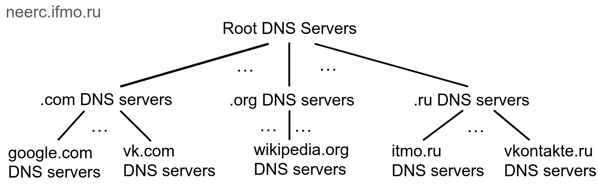
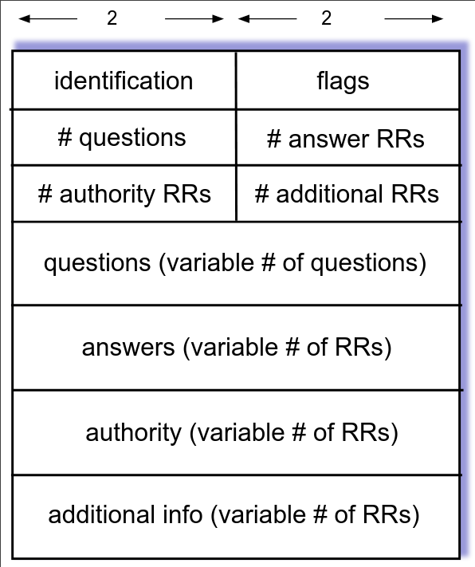

Лекция 7. DNS
DNS берёт человекочитаемое имя домена и преобразует в IP-адрес.
- Имя состоит из лейблов, разделенных точками
- Каждый лейбл не длинее 63 символов
- Имя в целом не длинее 254 символов
- Символы бывают [a-zA-Z0-9\-]
- Имена регистронезависимые
Не все пишут на латинице, поэтому ввели IDN (Internationalized domain name), которая конвертирует имена с юникодом в ascii имена. Это открывает возможности для фишинга — заменяем символы на похожие. Браузеры ищут не-ascii символы в ascii именах и показывают преобразованный результат, чтобы такого не случалось.
Где будем хранить мапинг имя -> IP?
/etc/hosts
Это файл, в котором лежат мапинги имен доменов на IP-адреса. Разумеется, это не масштабируется. Кроме того, мы не всегда хотим хранить только IP, например:
- A: IPv4
- AAAA: IPv6
- CNAME: алиас на другое имя
- PTR: алас на другое (различия увидим дальше)
- TXT: любой текст
- NXDOMAIN: null
- MX: почтовый сервер
Будем шардировать по лейблам: 
Процесс поиска выглядит так:
- Спрашиваем у коренного сервера: "где neerc.ifmo.ru?".
- Коренной сервер говорит: "про .ru надо спрашивать у вот этого сервера".
- Спрашиваем у .ru сервера
- т.д.
Root DNS серверов "существует" 13, но на самом деле это много серверов за 13 адресами. Они зашиты во все ОС. Их только 13, т.к. иначе информация о них не влезает в один DNS пакет.
Изначально было 7 top-level доменов, таких как .com, .org, .net и т.д.. Потом добавили домены стран (всегда два символа) и локализованные домены стран (.рф). В начала 10-х годов IANA решила заработать денег и позволила за деньги регистрировать себеg примерно любой домен первого уровня.
Resource Records
В линуксе есть утилиты nslookup и dig, которые делают DNS Lookup.
Для того чтобы организовать иерархическую структуру, есть несколько запись вида NS: "Я не знаю, но знаю того, кто знает". Также есть Glue records, которые подсказывают адрес сервера, который знает (вместо имени).
У наивного процесса DNS Lookup есть проблема - он очень долгий, мы не хотим обходить дерево на каждый запрос. Поэтому мы будем запоминать ответы в кеше. К каждому ответу DNS сервер прикрепляет TTL, в течение которого можно считать, что ответ не изменился. Чем выше в иерархии сервер, тем больше TTL.
Recursive resolvers
Мы не хотим делать DNS Lookup на своём компьютере, поэтому существуют рекурсивные серверы, которые сами выполняют лукап по запросу и кешируют ответы.
Адреса таких серверов обычно сообщаются через DHCP, но его можно и настроить руками в /etc/resolv.conf.
В этом же файле можно написать search bar под nameserver a.b.c.d.
Тогда если сервер не ответит на запрос foo, то будет резольвиться foo.bar.
Reverse DNS
DNS возвращает по имени адрес, но иногда мы хотим сделать наоборот.
Для этого сделана специальная top-level зона .arpa, dns lookup в которой дает адрес по имени.
Домены, по которым идут запросы выглядят так:
- ipv4:
132.215.234.77.in-addr.arpa - ipv6:
1.2.3...a.ip6.arpa
С ipv4 это сложно, т.к. границы подсетей не обязательно проходят по октетам. Поэтому нужно много записей для каждого октета. В ipv6 сделали каждый символ в адресе отдельным лейблом, чтобы частично избежать этого (если граница проходит по 16-битному куску, т.е. символу, то проблема остается).
За невалидные зоны никто не отвечает.
Чтобы доказать, что A владеет доменом B, некто C может попросить добавить произвольный текст в TXT запись для домена B.
Можно спрашивать не конкретную запись, а ANY, т.е. запрос отдать все записи. Это deprecated, т.к. это генерит много трафика по малому объему трафика. Обычно на ANY не отвечают тем, чем надо. Например Cloudflare отвечает "RFC8482" в поле HINFO. RFC8482 депрейкейтнул запрос ANY, а HINFO - поле информации о железе DNS сервера.
DNS протокол
Запросы и ответы имеют одинаковый формат: 
- identification - idшник, который может выставить клиент и тогда сервер обязан будет ответить с таким же id.
- flags - например, разрешить ли дальше спрашивать рекурсивно
- authority - информация, для которой сервер является авторитативным
- additional info - например, ip адреса NS серверов.
Изначально DNS работал поверх UDP, но там есть ограничение размера пакета в 512 байтов. Можно работать поверх TCP, в частности если ответ не влезает в UDP, то сервер может выставить флаг просьбы подключиться по TCP.
Оба эти варианта не используют защиту. Поэтому были сделано DNS over TLS и DNS over HTTPS, чтобы провайдер и третьи лица не видели, куда мы заходим. Over TLS гоняет те же самые бинарные пакеты, а over HTTPS гоняет жсоны.
EDNS
Это расширение DNS, которое добавляет ресурс OPT - произвольная информация. Примеры использования:
- флаг того, что по UDP можно посылать больше, чем 512 байт.
- IP адрес клиента.
IP адрес клиента полезен, если рекурсивный DNS находится далеко от клиента. Тогда (без передачи IP адреса клиента) DNS сервер ответит адресом, ближайшим к рекурсивному DNSу, а не к клиенту.
Уязвимости DNS
Злоумышленник может ответить на ваш запрос DNS и дать вам скомпрометированный IP адрес. Против этого есть identification.
- Злоумышленник может подслушать id, и от этого мы не защитимся.
- Злоумышленник может послать 65534 ответов со всеми id, если успеет.
Против второго метода можно рандомизировать капитализацию букв в имени домена и тогда DNS сервер должен будет ответить с такой же капитализацией. Это добавляет энтропии, что усложняет подбор.
DNS Cache posioning
Есть и другая атака — на рекурсивный сервер DNS, чтобы он всем отвечал неверные адреса.
Защита:
- Смена identification при рекурсии.
- Добавление энтропии в запрос, как и раньше.
Но это все не слишком безопасно. Добавили DNSSEC (DNS Security Extensions): у authoritative серверов есть приватные ключи, при этом каждый такой ключ подписан ключом сервера, который стоит выше в иерархии.
- RRSIG - подпись, идёт после записи, которая подписывается
- DNSSEC - публичный ключ
- DS - "за DNSSEC этой записи отвечаю не я, а другой сервер". Обычно совпадает с NS.
- NSEC - "такого имени домена нет". С помощью этой записи можно было перебором построить список всех записей, из-за этого была сделана замена - NSEC3.
Zone transfer
Если за одну и ту же зону отвечают несколько серверов, то хочется уметь их синхронизировать. Поэтому был запрос AXFR, который позволял получить все записи. Проблема очевидна — маленький запрос и большой ответ, поэтому это выключили.
Как получить себе домен?
- Есть оператор некоторой зоны, например
.com. Ему принадлежат сервера, которые отвечают за соответствующую зону. - Есть регистратор, который за деньги добавляет домен в список доменов в некоторой зоне на некоторое время. Регистратор позволяет либо добавить NS запись, которая перенаправит на ваш DNS сервер, либо захостить DNS, который будет направлять на нужный ip.
Операторы зоны также предоставляют whois - информацию о доменах, например кто зарегистрировал, куда жаловаться и т.д.